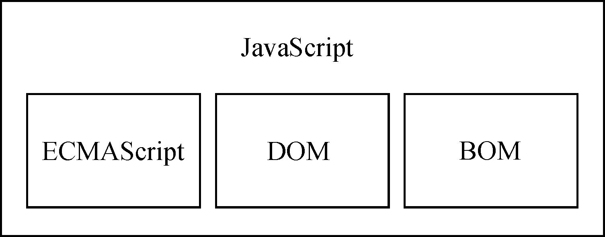
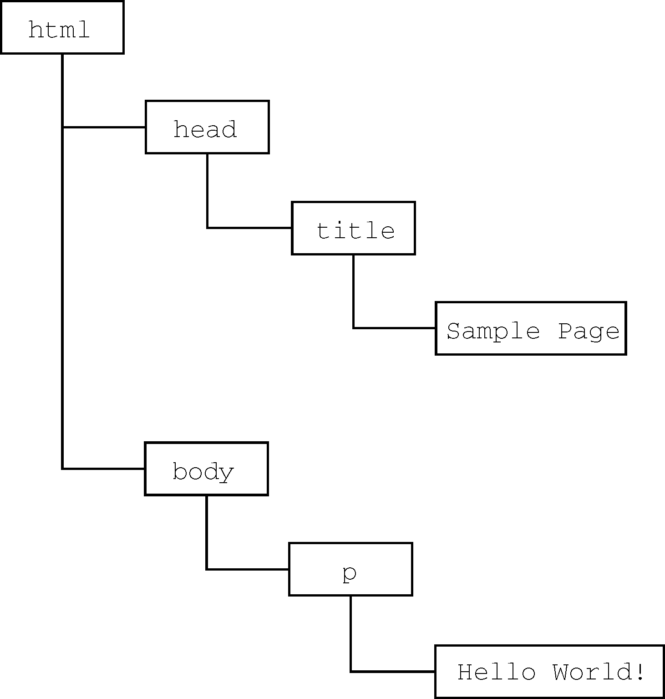

虽然JavaScript和ECMAScript基本上是同义词，但JavaScript远远不限于ECMA-262所定义的那样。没错，完整的JavaScript实现包含以下几个部分（见图1-1）：

图 1-1
ECMAScript，即ECMA-262定义的语言，并不局限于Web浏览器。事实上，这门语言没有输入和输出之类的方法。ECMA-262将这门语言作为一个基准来定义，以便在它之上再构建更稳健的脚本语言。Web浏览器只是ECMAScript实现可能存在的一种宿主环境（host environment）。宿主环境提供ECMAScript的基准实现和与环境自身交互必需的扩展。扩展（比如DOM）使用ECMAScript核心类型和语法，提供特定于环境的额外功能。其他宿主环境还有服务器端JavaScript平台Node.js和即将被淘汰的Adobe Flash。
如果不涉及浏览器的话，ECMA-262到底定义了什么？在基本的层面，它描述这门语言的如下部分：
ECMAScript只是对实现这个规范描述的所有方面的一门语言的称呼。JavaScript实现了ECMAScript，而Adobe ActionScript同样也实现了ECMAScript。
ECMAScript版本
ECMAScript不同的版本以“edition”表示（也就是描述特定实现的ECMA-262的版本）。ECMA-262最近的版本是第10版，发布于2019年6月。ECMA-262的第1版本质上跟网景的JavaScript 1.1相同，只不过删除了所有浏览器特定的代码，外加少量细微的修改。ECMA-262要求支持Unicode标准（以支持多语言），而且对象要与平台无关（Netscape JavaScript 1.1的对象不是这样，比如它的Date对象就依赖平台）。这也是JavaScript 1.1和JavaScript 1.2不符合ECMA-262第1版要求的原因。
ECMA-262第2版只是做了一些编校工作，主要是为了更新之后严格符合ISO/IEC-16262的要求，并没有增减或改变任何特性。ECMAScript实现通常不使用第2版来衡量符合性（conformance）。
ECMA-262第3版第一次真正对这个标准进行更新，更新了字符串处理、错误定义和数值输出。此外还增加了对正则表达式、新的控制语句、try/catch异常处理的支持，以及为了更好地让标准国际化所做的少量修改。对很多人来说，这标志着ECMAScript作为一门真正的编程语言的时代终于到来了。
ECMA-262第4版是对这门语言的一次彻底修订。作为对JavaScript在Web上日益成功的回应，开发者开始修订ECMAScript以满足全球Web开发日益增长的需求。为此，Ecma T39再次被召集起来，以决定这门语言的未来。结果，他们制定的规范几乎在第3版基础上完全定义了一门新语言。第4版包括强类型变量、新语句和数据结构、真正的类和经典的继承，以及操作数据的新手段。
与此同时，TC39委员会的一个子委员会也提出了另外一份提案，叫作“ECMAScript 3.1”，只对这门语言进行了较少的改进。这个子委员会的人认为第4版对这门语言来说跳跃太大了。因此，他们提出了一个改动较小的提案，只要在现有JavaScript引擎基础上做一些增改就可以实现。最终，ES3.1子委员会赢得了TC39委员会的支持，ECMA-262第4版在正式发布之前被放弃。
ECMAScript 3.1变成了ECMA-262的第5版，于2009年12月3日正式发布。第5版致力于厘清第3版存在的歧义，也增加了新功能。新功能包括原生的解析和序列化JSON数据的JSON对象、方便继承和高级属性定义的方法，以及新的增强ECMAScript引擎解释和执行代码能力的严格模式。第5版在2011年6月发布了一个维护性修订版，这个修订版只更正了规范中的错误，并未增加任何新的语言或库特性。
ECMA-262第6版，俗称ES6、ES2015或ES Harmony（和谐版），于2015年6月发布。这一版包含了大概这个规范有史以来最重要的一批增强特性。ES6正式支持了类、模块、迭代器、生成器、箭头函数、期约、反射、代理和众多新的数据类型。
ECMA-262第7版，也称为ES7或ES2016，于2016年6月发布。这次修订只包含少量语法层面的增强，如Array.prototype.includes和指数操作符。
ECMA-262第8版，也称为ES8、ES2017，完成于2017年6月。这一版主要增加了异步函数（async/await）、SharedArrayBuffer及Atomics API，以及Object.values()/Object.entries()/Object.getOwnPropertyDescriptors()和字符串填充方法，另外明确支持对象字面量最后的逗号。
ECMA-262第9版，也称为ES9、ES2018，发布于2018年6月。这次修订包括异步迭代、剩余和扩展属性、一组新的正则表达式特性、Promise finally()，以及模板字面量修订。
ECMA-262第10版，也称为ES10、ES2019，发布于2019年6月。这次修订增加了Array.prototype.flat()/flatMap()、String.prototype.trimStart()/trimEnd()、Object.fromEntries()方法，以及Symbol.prototype.description属性，明确定义了Function.prototype.toString()的返回值并固定了Array.prototype.sort()的顺序。另外，这次修订解决了与JSON字符串兼容的问题，并定义了catch子句的可选绑定。
ECMAScript符合性是什么意思
ECMA-262阐述了什么是ECMAScript符合性。要成为ECMAScript实现，必须满足下列条件：
此外，符合性实现还可以满足下列要求。
以上条件为实现开发者基于ECMAScript开发语言提供了极大的权限和灵活度，也是其广受欢迎的原因之一。
浏览器对ECMAScript的支持
1996年，Netscape Navigator 3发布时包含了JavaScript 1.1。JavaScript 1.1规范随后被提交给Ecma，作为对新的ECMA-262标准的建议。随着JavaScript迅速走红，网景非常愿意开发1.2版。可是有个问题：Ecma尚未接受网景的建议。
Netscape Navigator 3发布后不久，微软推出了IE3。IE的这个版本包含了JScript 1.0，本意是提供与JavaScript 1.1相同的功能。不过，由于缺少很多文档，而且还有不少重复性功能，JScript 1.0远远没有JavaScript 1.1那么强大。
JScript的再次更新出现在IE4中的JScript 3.0（2.0版是在Microsoft Internet Information Server 3.0中发布的，但从未包含在浏览器中）。微软发新闻稿称JScript 3.0是世界上第一门真正兼容Ecma标准的脚本语言。当时ECMA-262还没制定完成，因此JScript 3.0遭受了与JavaScript 1.2同样的命运，它同样没有遵守最终的ECMAScript标准。
网景又在Netscape Navigator 4.06中将其JavaScript版本升级到1.3，因此做到了与ECMA-262第1版完全兼容。JavaScript 1.3增加了对Unicode标准的支持，并做到了所有对象都与平台无关，同时保留了JavaScript 1.2所有的特性。
后来，当网景以Mozilla项目的名义向公众发布其源代码时，人们都期待Netscape Navigator 5中会包含JavaScript 1.4。可是，一个完全重新设计网景代码的激进决定导致了人们的希望落空。JavaScript 1.4只在Netscape Enterprise Server中作为服务器端语言发布了，从来就没有进入浏览器。
到了2008年，五大浏览器（IE、Firefox、Safari、Chrome和Opera）全部兼容ECMA-262第3版。IE8率先实现ECMA-262第5版，并在IE9中完整支持。Firefox 4很快也做到了。下表列出了主要的浏览器版本对ECMAScript的支持情况。
| 浏览器 | ECMAScript符合性 |
|---|---|
| Netscape Navigator 2 | — |
| Netscape Navigator 3 | — |
| Netscape Navigator 4~4.05 | — |
| Netscape Navigator 4.06~4.79 | 第1版 |
| Netscape 6+（Mozilla 0.6.0+） | 第3版 |
| IE3 | — |
| IE4 | — |
| IE5 | 第1版 |
| IE5.5~8 | 第3版 |
| IE9 | 第5版（部分） |
| IE10~11 | 第5版 |
| Edge 12+ | 第6版 |
| Opera 6~7.1 | 第2版 |
| Opera 7.2+ | 第3版 |
| Opera 15~28 | 第5版 |
| Opera 29~35 | 第6版（部分） |
| Opera 36+ | 第6版 |
| Safari 1~2.0.x | 第3版（部分） |
| Safari 3.1~5.1 | 第5版（部分） |
| Safari 6~8 | 第5版 |
| Safari 9+ | 第6版 |
| iOS Safari 3.2~5.1 | 第5版（部分） |
| iOS Safari 6~8.4 | 第5版 |
| iOS Safari 9.2+ | 第6版 |
| Chrome 1~3 | 第3版 |
| Chrome 4~22 | 第5版（部分） |
| Chrome 23+ | 第5版 |
| Chrome 42~48 | 第6版（部分） |
| Chrome 49+ | 第6版 |
| Firefox 1~2 | 第3版 |
| Firefox 3.0.x~20 | 第5版（部分） |
| Firefox 21~44 | 第5版 |
| Firefox 45+ | 第6版 |
文档对象模型（DOM，Document Object Model）是一个应用编程接口（API），用于在HTML中使用扩展的XML。DOM将整个页面抽象为一组分层节点。HTML或XML页面的每个组成部分都是一种节点，包含不同的数据。比如下面的HTML页面：
<html>
<head>
<title>sample page</title>
</head>
<body>
<p> hello world!</p>
</body>
</html>这些代码通过DOM可以表示为一组分层节点，如图1-2所示。

图 1-2
DOM通过创建表示文档的树，让开发者可以随心所欲地控制网页的内容和结构。使用DOM API，可以轻松地删除、添加、替换、修改节点。
为什么DOM是必需的
在IE4和Netscape Navigator 4支持不同形式的动态HTML（DHTML）的情况下，开发者首先可以做到不刷新页面而修改页面外观和内容。这代表了Web技术的一个巨大进步，但也暴露了很大的问题。由于网景和微软采用不同思路开发DHTML，开发者写一个HTML页面就可以在任何浏览器中运行的好日子就此终结。
为了保持Web跨平台的本性，必须要做点什么。人们担心如果无法控制网景和微软各行其是，那么Web就会发生分裂，导致人们面向浏览器开发网页。就在这时，万维网联盟（W3C，World Wide Web Consortium）开始了制定DOM标准的进程。
DOM级别
1998年10月，DOM Level 1成为W3C的推荐标准。这个规范由两个模块组成：DOM Core和DOM HTML。前者提供了一种映射XML文档，从而方便访问和操作文档任意部分的方式；后者扩展了前者，并增加了特定于HTML的对象和方法。
注意 DOM并非只能通过JavaScript访问，而且确实被其他很多语言实现了。不过对于浏览器来说，DOM就是使用ECMAScript实现的，如今已经成为JavaScript语言的一大组成部分。
DOM Level 1的目标是映射文档结构，而DOM Level 2的目标则宽泛得多。这个对最初DOM的扩展增加了对（DHTML早就支持的）鼠标和用户界面事件、范围、遍历（迭代DOM节点的方法）的支持，而且通过对象接口支持了层叠样式表（CSS）。另外，DOM Level 1中的DOM Core也被扩展以包含对XML命名空间的支持。
DOM Level 2新增了以下模块，以支持新的接口。
DOM Level 3进一步扩展了DOM，增加了以统一的方式加载和保存文档的方法（包含在一个叫DOM Load and Save的新模块中），还有验证文档的方法（DOM Validation）。在Level 3中，DOM Core经过扩展支持了所有XML 1.0的特性，包括XML Infoset、XPath和XML Base。
目前，W3C不再按照Level来维护DOM了，而是作为DOM Living Standard来维护，其快照称为DOM4。DOM4新增的内容包括替代Mutation Events的Mutation Observers。
注意 在阅读关于DOM的资料时，你可能会看到DOM Level 0的说法。注意，并没有一个标准叫“DOM Level 0”，这只是DOM历史中的一个参照点。DOM Level 0可以看作IE4和Netscape Navigator 4中最初支持的DHTML。
其他DOM
除了DOM Core和DOM HTML接口，有些其他语言也发布了自己的DOM标准。下面列出的语言是基于XML的，每一种都增加了该语言独有的DOM方法和接口：
此外，还有一些语言开发了自己的DOM实现，比如Mozilla的XML用户界面语言（XUL，XML User Interface Language）。不过，只有前面列表中的语言是W3C推荐标准。
Web浏览器对DOM的支持情况
DOM标准在Web浏览器实现它之前就已经作为标准发布了。IE在第5版中尝试支持DOM，但直到5.5版才开始真正支持，该版本实现了DOM Level 1的大部分。IE在第6版和第7版中都没有实现新特性，第8版中修复了一些问题。
网景在Netscape 6（Mozilla 0.6.0）之前都不支持DOM。Netscape 7之后，Mozilla把开发资源转移到开发Firefox浏览器上。Firefox 3+支持全部的Level 1、几乎全部的Level 2，以及Level 3的某些部分。（Mozilla开发团队的目标是打造百分之百兼容标准的浏览器，他们的工作也得到了应有的回报。）
支持DOM是浏览器厂商的重中之重，每个版本发布都会改进支持度。下表展示了主流浏览器支持DOM的情况。
| 浏览器 | DOM兼容 |
|---|---|
| Netscape Navigator 1~4.x | — |
| Netscape 6+（Mozilla 0.6.0+） | Level 1、Level 2（几乎全部）、Level 3（部分） |
| IE2~4.x | — |
| IE5 | Level 1（很少） |
| IE5.5~8 | Level 1（几乎全部） |
| IE9+ | Level 1、Level 2、Level 3 |
| Edge | Level 1、Level 2、Level 3 |
| Opera 1~6 | — |
| Opera 7~8.x | Level 1（几乎全部）、Level 2（部分） |
| Opera 9~9.9 | Level 1、Level 2（几乎全部）、Level 3（部分） |
| Opera 10+ | Level 1、Level 2、Level 3（部分） |
| Safari 1.0.x | Level 1 |
| Safari 2+ | Level 1、Level 2（部分）、Level 3（部分） |
| iOS Safari 3.2+ | Level 1、Level 2（部分）、Level 3（部分） |
| Chrome 1+ | Level 1、Level 2（部分）、Level 3（部分） |
| Firefox 1+ | Level 1、Level 2（几乎全部）、Level 3（部分） |
注意 上表中兼容性的状态会随时间而变化，其中的内容仅反映本书写作时的状态。
IE3和Netscape Navigator 3提供了浏览器对象模型（BOM） API，用于支持访问和操作浏览器的窗口。使用BOM，开发者可以操控浏览器显示页面之外的部分。而BOM真正独一无二的地方，当然也是问题最多的地方，就是它是唯一一个没有相关标准的JavaScript实现。HTML5改变了这个局面，这个版本的HTML以正式规范的形式涵盖了尽可能多的BOM特性。由于HTML5的出现，之前很多与BOM有关的问题都迎刃而解了。
总体来说，BOM主要针对浏览器窗口和子窗口（frame），不过人们通常会把任何特定于浏览器的扩展都归在BOM的范畴内。比如，下面就是这样一些扩展：
navigator对象，提供关于浏览器的详尽信息；location对象，提供浏览器加载页面的详尽信息；screen对象，提供关于用户屏幕分辨率的详尽信息；performance对象，提供浏览器内存占用、导航行为和时间统计的详尽信息；XMLHttpRequest和IE的ActiveXObject。因为在很长时间内都没有标准，所以每个浏览器实现的都是自己的BOM。有一些所谓的事实标准，比如对于window对象和navigator对象，每个浏览器都会给它们定义自己的属性和方法。现在有了HTML5，BOM的实现细节应该会日趋一致。关于BOM，本书会在第12章再专门详细介绍。